👹 Makuta — The Shadows of Mata Nui 👹
Makuta Teridax is the primary antagonist of the Bionicle saga — a being of pure shadow who betrayed his duty and sought to plunge Mata Nui into eternal darkness. He infected Rahi with his influence, created the Rahkshi from Kraata, and ruled from his lair beneath the island. The Toa's greatest challenge was not just defeating his minions, but confronting the master of shadows himself. In addition, the Bohrok swarms — though not evil — served as a separate threat that nearly wiped the island clean.
💀 Makuta Teridax — The Master of Shadows 💀
Once a member of the Brotherhood of Makuta, Teridax betrayed his purpose. He cast Mata Nui into a deep slumber, corrupted the island with infected Rahi, and waited for the Toa to arrive so he could destroy them. He wears the Kanohi Kraahkan, the Mask of Shadows, and commands all forms of darkness.
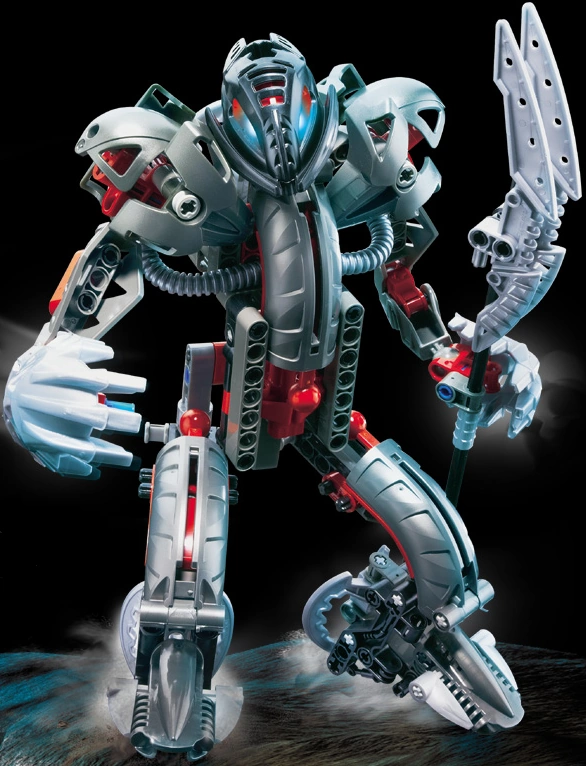
Makuta Teridax
🌑 Shadow 🌑Lair: Mangaia (beneath the island of Mata Nui)
Personality: Cunning, patient, and utterly ruthless. Teridax orchestrated the Great Cataclysm, plunged Mata Nui into a thousand-year sleep, and manipulated the Toa from the shadows. He is a master strategist who always thinks several moves ahead.
Powers: Shadow manipulation, shapeshifting, Rahi control, Kraata creation, and all 42 Kraata powers.
🐉 Rahkshi — The Children of Makuta 🐉
Rahkshi are powerful creatures spawned from Kraata — slug-like beings created by Makuta. Each Rahkshi possesses a unique power based on its Kraata type. They serve as Makuta's foot soldiers and enforcers. The Rahkshi that attacked Mata Nui were the first six to ever exist, created specifically to hunt the Mask of Light.

Turahk
💀 Fear 💀Staff: Staff of Fear (red)
Personality: Cruel and sadistic. Turahk enjoys watching enemies cower before striking.
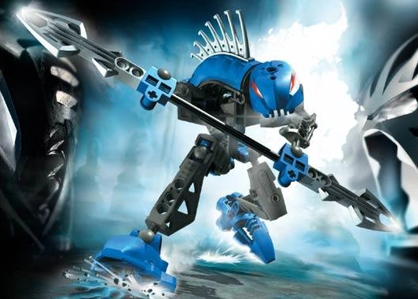
Guurahk
⚡ Disintegration ⚡Staff: Staff of Disintegration (blue)
Personality: Methodical and efficient. Guurahk leaves nothing but rubble behind.

Lerahk
🧪 Poison 🧪Staff: Staff of Poison (green)
Personality: Vicious and relentless. Lerahk's very presence poisons the air around it.

Panrahk
💥 Fragmentation 💥Staff: Staff of Fragmentation (brown)
Personality: Explosive and destructive. Panrahk loves chaos.
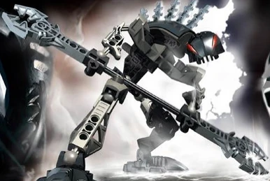
Vorahk
🍽️ Hunger 🍽️Staff: Staff of Hunger (black)
Personality: Insatiable and greedy. Vorahk grows stronger as it feeds.
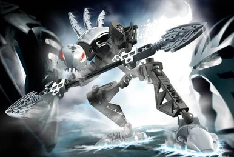
Kurahk
😤 Anger 😤Staff: Staff of Anger (white)
Personality: Volatile and aggressive. Kurahk turns friends into enemies.
🪲 Bohrok — The Swarm That Cleans the World 🪲
The Bohrok are not evil — they are a natural force designed to cleanse the island of Mata Nui when the Great Spirit awakens. They emerge from underground hives and strip the land bare, removing all plant life and structures. The Toa Nuva had to stop them before they destroyed the entire island. Each Bohrok is controlled by a Krana — a living organism that pilots the mechanical shell.

Tahnok
🔥 Fire 🔥Ability: Launches fireballs and superheated plasma from its faceplate.
Description: The most aggressive of the Bohrok. Tahnok burn everything in their path, leaving only ash behind.
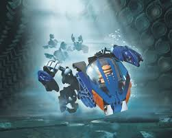
Gahlok
💧 Water 💧Ability: Fires high-pressure water jets that can cut through solid rock.
Description: Methodical and relentless. Gahlok erodes coastlines and floods villages.

Kohrak
❄️ Ice ❄️Ability: Launches freezing blasts and shards of ice.
Description: Silent and cold. Kohrak freezes entire forests solid before shattering them.

Pahrak
🪨 Stone 🪨Ability: Fires explosive energy blasts that shatter rock and metal.
Description: Heavy and powerful. Pahrak demolish mountains and level canyons.

Nuhvok
⛰️ Earth ⛰️Ability: Launches seismic waves that cause earthquakes and collapses.
Description: The strongest of the Bohrok. Nuhvok tunnel through bedrock and topple structures.

Lehvak
🌪️ Air 🌪️Ability: Fires corrosive acid spray that dissolves organic matter.
Description: Swift and precise. Lehvak melt through forests and leave barren wastelands.
⚡ Bohrok-Kal — The Enhanced Warriors ⚡
After the Toa Nuva defeated the Bahrag queens, a second wave of Bohrok emerged — the Bohrok-Kal. These silver-armored warriors were more intelligent and powerful than their predecessors. Each Bohrok-Kal possessed a unique elemental shadow power and was sent to retrieve the Nuva Symbols, which were the key to freeing the Bahrag. Unlike regular Bohrok, the Kal could think and strategize, making them far more dangerous opponents.

Tahnok-Kal
🔥 Fire Shadow 🔥Ability: Can generate and control shadow-fire — flames that burn without light and cannot be extinguished by normal means.
Personality: Aggressive and prideful. Tahnok-Kal believes itself superior to all other Bohrok.

Gahlok-Kal
💧 Water Shadow 💧Ability: Controls dark water — thick, viscous liquid that traps and drowns enemies.
Personality: Cold and calculating. Gahlok-Kal is the strategist of the Kal.

Kohrak-Kal
❄️ Ice Shadow ❄️Ability: Creates black ice — impossibly cold, unbreakable, and drains heat from anything it touches.
Personality: Silent and patient. Kohrak-Kal waits for the perfect moment to strike.
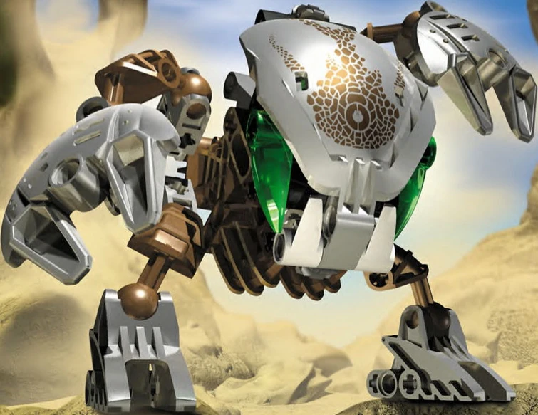
Pahrak-Kal
🪨 Stone Shadow 🪨Ability: Launches shadow-shatter blasts that disintegrate matter into dust.
Personality: Brutal and direct. Pahrak-Kal prefers to smash through obstacles rather than avoid them.
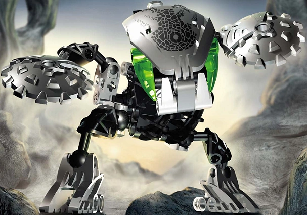
Nuhvok-Kal
⛰️ Earth Shadow ⛰️Ability: Can merge with shadow-earth, traveling through rock and dirt undetected.
Personality: Mysterious and elusive. Nuhvok-Kal strikes from below without warning.
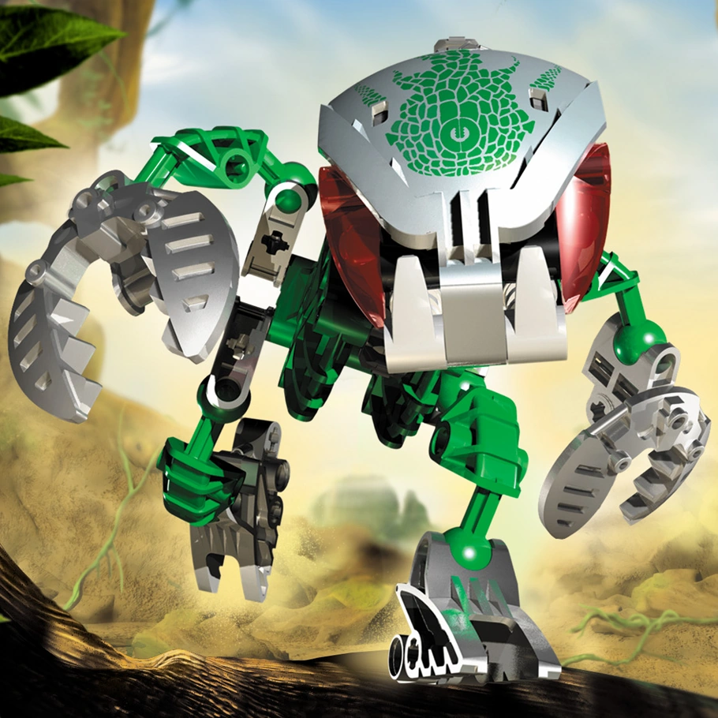
Lehvak-Kal
🌪️ Air Shadow 🌪️Ability: Commands shadow-winds — invisible, silent tornadoes that tear through armor.
Personality: Playful but deadly. Lehvak-Kal toys with prey before finishing the hunt.
👑 Bahrag Queens — Rulers of the Swarm 👑
Cahdok and Gahdok are the twin Bahrag queens who command all Bohrok. They reside deep beneath Mata Nui in the Bohrok nests. The Toa Nuva had to defeat them to stop the swarms. After their defeat, the queens were sealed in a cage of protodermis, ending the Bohrok threat.
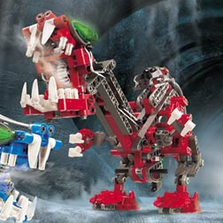
Cahdok
👑 Queen 👑Ability: Commands the Bohrok swarms with Gahdok. Can create Krana and control the hives.
Description: One of twin Bahrag queens who rule the Bohrok. She and Gahdok were defeated by the Toa Nuva and sealed in a cage of protodermis.
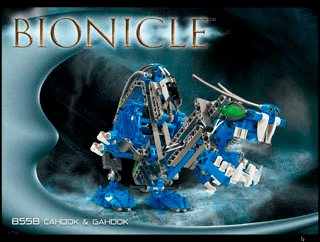
Gahdok
👑 Queen 👑Ability: Commands the Bohrok swarms with Cahdok. Can generate energy shields.
Description: The twin queen of the Bohrok. Together with Cahdok, she directed the cleansing of Mata Nui until the Toa Nuva intervened.
🦎 Infected Rahi — Beasts of Makuta 🦎
When Makuta first awoke, he used infected Kanohi masks to enslave the wild Rahi (animals) of Mata Nui. These creatures became his eyes, ears, and claws, attacking Matoran villages and preventing the Toa from reaching his lair. Each infected Rahi wore a twisted, purple-stained mask that corrupted its mind.

Nui-Rama
🦟 Wasp 🦟Location: Fau Swamp, Le-Wahi
Description: Massive flying insects with razor-sharp stingers. They attack in swarms and are nearly blind, relying on sound to hunt. A single Nui-Rama can carry off a Matoran.

Nui-Jaga
🦂 Scorpion 🦂Location: Po-Wahi desert
Description: Deadly scorpions with venomous tails and crushing claws. They hunt in pairs and are extremely territorial. Their sting can paralyze a Toa temporarily.

Tarakava
🦎 Lizard 🦎Location: Ga-Wahi coastline
Description: Bipedal lizards with powerful punching arms. They lurk in coastal waters, ambushing prey from below. Their punch can shatter stone.
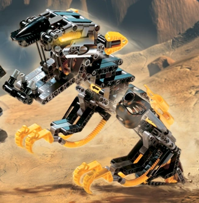
Muaka
🐅 Tiger 🐅Location: Ta-Wahi mountains
Description: Feline predators with razor claws and lightning reflexes. Muaka are solitary hunters, stalking prey for days before striking.

Kane-Ra
🐃 Bull 🐃Location: Po-Wahi desert
Description: Massive horned beasts that charge without warning. A Kane-Ra stampede can level an entire village.

Manas
🦀 Crab 🦀Location: Mangaia (Makuta's Lair)
Description: Massive crustaceans that guard the entrance to Makuta's lair. They have impenetrable shells and claws that can crush a Toa. Manas hunt in coordinated pairs and are nearly impossible to defeat alone.